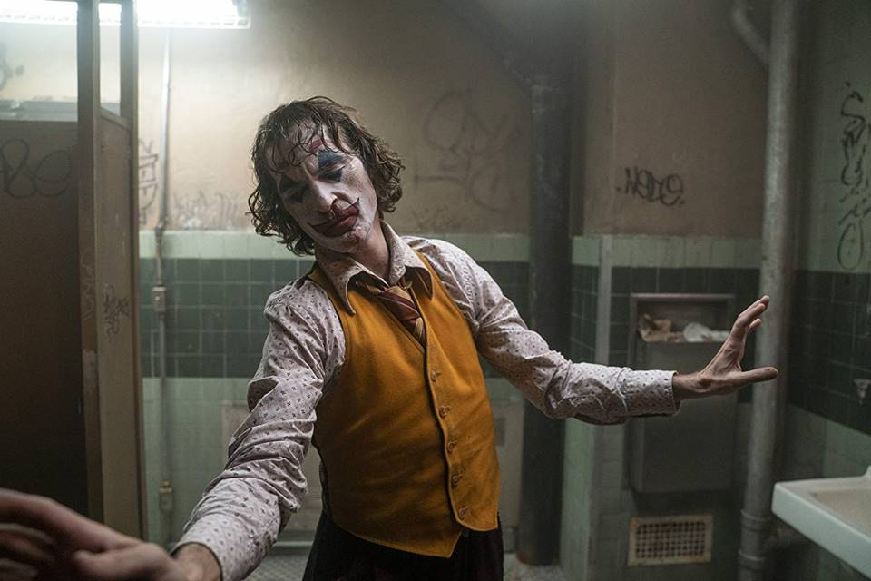
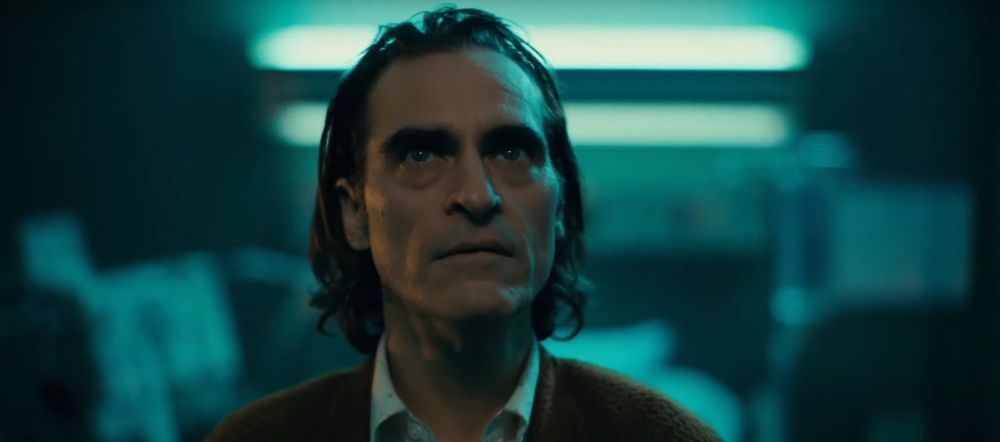
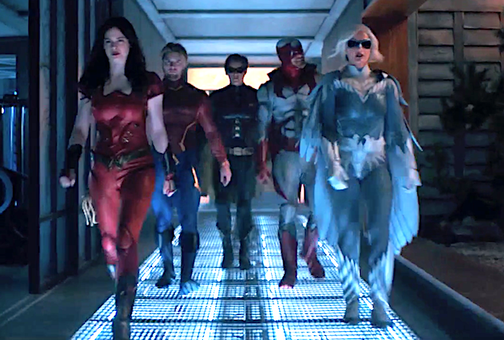
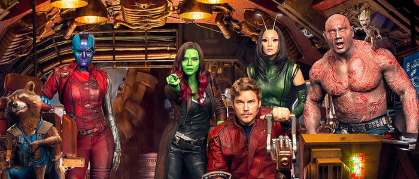
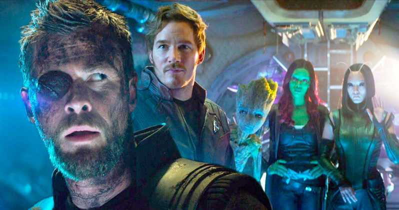

CORINGA
Joaquin Phoenix se baseou em um transtorno psicológico para criar a risada do Coringa no filme solo do personagem. O ator explicou o método em entrevista à revista italiana La Repubblica, dizendo que começou o estudo do Coringa por seu riso icônico [via CBR]: "Eu assisti vídeos de pessoas que sofrem de uma risada patológica, um transtorno neurológico que faz com que indivíduos riam incontrolavelmente".
Na estreia do longa no Festival de Veneza, o ator Joaquin Phoenix e o diretor Todd Phillips foram ovacionados durante oito minutos.
Segundo a sinopse oficial, Coringa segue a história de Arthur Fleck, um homem lutando para se integrar à sociedade despedaçada de Gotham. Trabalhando como palhaço durante o dia, ele tenta a sorte como comediante de stand-up à noite... mas descobre que a piada é sempre ele mesmo. Preso em uma existência cíclica, oscilando entre a realidade e a loucura, Arthur toma uma decisão equivocada que causa uma reação em cadeia, com consequências cada vez mais graves e letais, nesta exploração ousada do personagem. Além de Phoenix, Coringa também traz Robert De Niro, Zazie Beetz, Frances Conroy e Marc Maron.
A estreia no Brasil está marcada para 3 de outubro.
TITÃS
O primeiro trailer da 2ª temporada de Titãs revelou personagens inéditos, apresentou o retorno de heróis e sugeriu novos vilões para o novo ano. Confira abaixo 12 momentos para prestar atenção no trailer do segundo ano, que estreia em 6 setembro nos EUA.

O trailer abre com o reencontro entre Batman e Robin. No universo do seriado, Dick Grayson passou a agir sozinho após abandonar o Homem-Morcego por considerar seus métodos muito violentos. A relação entre o parceiro-mirim e o herói estava estremecida desde então, motivo pelo qual o Cavaleiro das Trevas não foi visto na primeira temporada da série. Essa é a primeira imagem oficial de Iain Glen como Bruce Wayne. Vale lembrar que o ator é atração confirmada na CCXP19.
GARDIÕES DA GALÁXIA
James Gunn foi recontratado para a direção do Guardiões da Galáxia Vol. 3, de acordo com o Deadline. O presidente do Walt Disney Studios Alan Horn, que havia decidido demitir o cineasta em julho com o resgate de tweets polêmicos antigos de Gunn, mudou de ideia depois de uma série de encontros com o diretor e o pedido de desculpas público dele. Segundo o site, apesar dos rumores envolvendo os nomes de Taika Waititi e Adam McKay, o Marvel Studios nunca considerou outro cineasta para o cargo. Publicamente, o presidente do estúdio Kevin Feige havia apenas revelado que usariam o roteiro original de Gunn. Com o diretor escalado para comandar Esquadrão Suicida 2, a situação para o retorno do cineasta para a Casa das Ideias parecia complicado. No entanto, a Marvel concordou em começar a produção do terceiro filme dos Guardiões após a conclusão do longa da DC, que estreia em 6 de agosto de 2021.
Dave Bautista revelou que gostaria de ter Chris Hemsworth em Guardiões da Galáxia Vol. 3. Em entrevista ao THR, o ator afirmou que a parceria entre Thor e a equipe funcionou tão bem nos bastidores quanto nas telonas: “(...) Não havia confronto de egos ou essa atitude. Se aconteceu, eu não vi. Acho Chris Hemsworth um cara incrível, um australiano divertido e amável. Ele é o que você espera que seja. Muito divertido, agradável e otimista. Ele é muito sociável, então acho que seria uma combinação perfeita, para ser honesto com você.” Vale lembrar que Hemsworth afirmou que gostaria viver o Deus do Trovão no próximo filme da equipe - saiba mais. Bautista revelou também que não ficou com medo de represálias por defender James Gunn, diretor dos dois primeiros filmes, que foi dispensado de Guardiões da Galáxia Vol. 3 quando dezenas de tweets dele de quase uma década atrás foram resgatados. De acordo com o ator, sua consciencia está tranquila pois nunca houve desrespeito de sua parte: “Nunca fui desrespeitoso. Nunca xinguei a Disney. Foi uma decisão ruim, e só reclamei com eles. Só isso, não foi malicioso ou desrespeitoso. Apenas protestei sobre uma decisão ruim e tentei fazê-los enxergar o panorama geral. Foi uma escolha muito precipitada. Só queria que meu amigo fosse recontratado e nunca pensei nada além disso. Não estava tão preocupado com minha carreira naquele ponto. Pensei que se ela estivesse acabada, poderia sempre voltar a ser um lutador de wrestling profissional.” Entenda o caso James Gunn na Disney e o futuro de Guardiões da Galáxia O presidente do Walt Disney Studios Alan Horn, que havia decidido demitir o cineasta em julho, mudou de ideia depois de uma série de encontros com Gunn e o pedido de desculpas público dele. O diretor retorna e as filmagens do terceiro longa dos Guardiões da Galáxia devem começar em fevereiro de 2021. Tudo sobre MCU - Universo Cinematográfico da Marvel